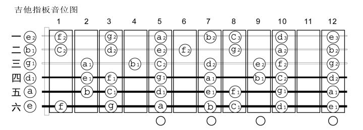
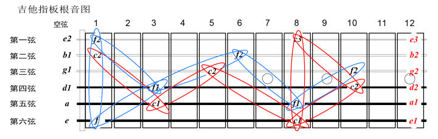
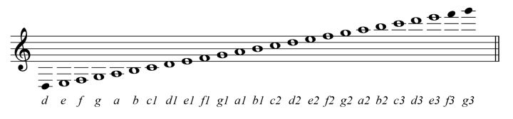

1 理论基础
1.1 音阶和调式
记住吉他的每一个音
1.2 音程
1.3 和弦
1.4 节奏
1.5 风格
1.5.1 Blues
1.6 好和弦视频笔记
1.7 Tracks
一些 Jam 使用的 tracks
2 五线谱(Five-line Staff)
2.1 教学视频
推荐: 好和弦的五线谱教程
一些五线谱的英文对照表
音符 musical note
| 名称 | 翻译 |
|---|---|
| 音符 | Musical Note |
| 全/半/四/八分音符 | Whole/Half/Quarter/Eighth Note |
| 拍号 | Time Signature |
| 调号 | Key Signature |
| 附点音符 | Dotted Note |
| 连音 | Tuplet |
| 符头/干/尾/酐 | Note Head/Stem/Flag/Beam |
| 休止符 | Rest |
| 全/半/四/八分休止符 | Whole/Half/Quarter/Eighth Rest |
| 加线 | Ledger Line |
| 谱号 | Clef |
| 升/降/还原 | Sharp/Flat/natural |
| 重降/重升 | Double Flat/Double Sharp |
| 临时记号 | Accidental |
| 从头开始 | D.C |
| 结束 | FINE (意大利文) |
| 第一/第二结尾 | First/Second Ending |
| 颤音 | Tremolo |
| 断奏 | Staccato |
| 强音 | Accent |
| 持音 | Tenuto |
| 延长 | Fermata |
| 强/弱/中 | Forte/Piano/Mezzo 这里就是F/P/M |
| 渐强/渐弱 | cresc./dim. |
♩=120, 代表的是每分钟120个♩
小节线 |; 如果要分段或者换调用, 则使用双小节线 ||; 反复记号 ||: :||
2.2 吉他和五线谱关系



吉他演奏的音域 
2.3 五线谱上的谱号

3 ABC Notation
3.1 常用符号整理
下面的 + 代表 |
| 符号 | 含义 | 示例 |
|---|---|---|
| T | 标题 | T: Title |
| C | 作曲作者 | C: 周杰伦 |
| L | unit note length | L: 1/4 |
| Q | tempo, 速度 | Q: 100 |
| K | Key | K: C#m |
| ,' | 低音/高音 | E, e' |
| ,=,_ | Accidentals | ^E =E _E, 分别代表 E♯, ♮E 和 E♭ |
| / | lengths | a/ 代表a/2; a// 代表 a/4 |
| +: :+ | 开始 结束重复 | +: a b c :+ |
| +[1 | 第一遍重复 | +: common body of tune +1 first ending :+2 second ending +] |
| (), - | Ties and slurs | (a b) c4-c |
| (3 | 三连音 | (3abc |
| " D" | 标记/和弦 | 添加空格代表为标记, 没有空格则可认为是和弦D |
3.1.1 例子
MUSIC: L:1/16 M:4/4 Q:70 K:C transpose=-12 ||: " Dm9" DFec DFec DFec DFec | " C∆9" CEdB CEdB CEdB CEdB :|| | " Dm9" DFec DFec DFec DFec | " C∆9" CEdB CEdB CEdB CEdB | | " Em7" E,EdB E,EdB E,EdB E,EdB | " Am7" A,EcG A,EcG A,EcG A,EcG |
3.2 References
4 GuitarPro
4.1 ShortCuts
Command ⌘ Shift ⇧ Option ⌥ Control ⌃
| 快捷键 | 释义 |
|---|---|
| 1/2/3 | 品位数 |
| + | 音符长度减半 |
| - | 音符长度增倍 |
| k | 设置clef |
| ⌘k | 设置Key |
| i | let-it-ring |
| % | 重复上一个小节 |
| r | Rest,休止符 |
| ⌘+ | 插入一个音符 |
| ⌘- | 删除一个音符 |
| ⌃+ | 插入一个小节 |
| ⌃- | 删除一个小节 |
| a | 添加和弦 |
| t | 添加文案 |
| ] | 反复记号 |